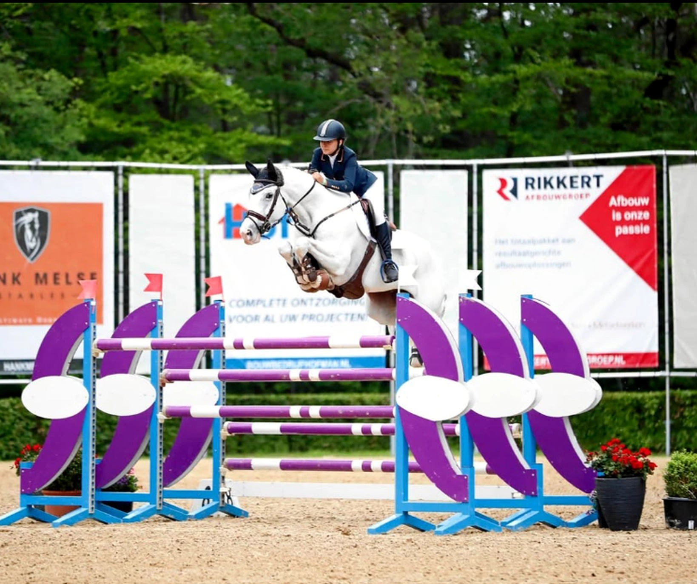
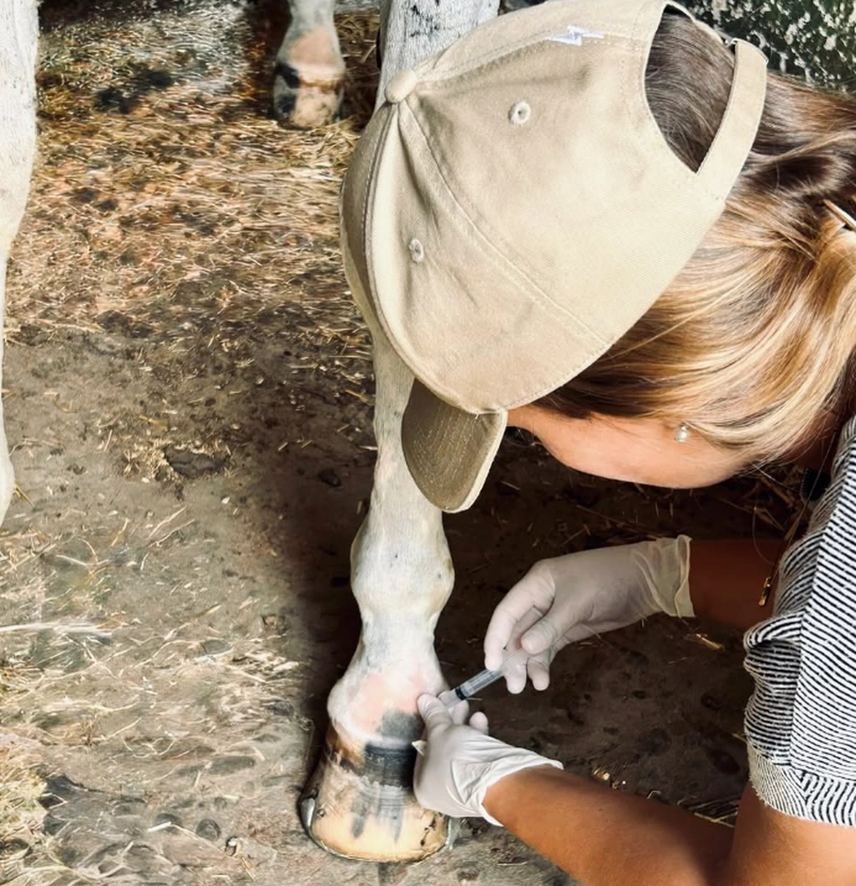

MEDICINA DEPORTIVAequinaDIAGNÓSTICOde precisiónEXÁMENES PRECOMPRAen toda España
Medicina veterinaria pensada desde dentro del deporte.

Veterinaria Amazona Deporte
Entender al caballo. Y también al jinete.
La medicina deportiva se aborda desde una doble perspectiva clínica y deportiva: entender lo que muestra el caballo, escuchar lo que percibe el jinete y traducirlo en una valoración útil, precisa y orientada al trabajo.
Sobre el enfoqueServicios
Medicina deportiva
Valoración locomotora, diagnóstico de cojeras y seguimiento del rendimiento.
Rehabilitación integral
Tratamiento, recuperación y vuelta progresiva al trabajo, con alojamiento y manutención si el caso lo requiere.
Precompra
Exámenes veterinarios independientes para compradores, con desplazamiento por España y Europa.
Fisioterapia, osteopatía y quiropraxia
Fisioterapia, osteopatía y quiropraxia equina integradas en el plan clínico y deportivo.
«Un buen diagnóstico no termina en saber qué ocurre. Termina cuando el caballo vuelve a trabajar bien.»
Vida clínica, deporte y caballos